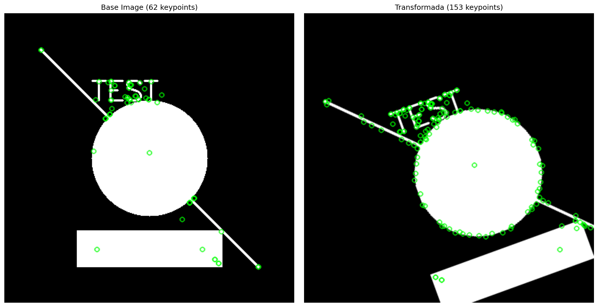
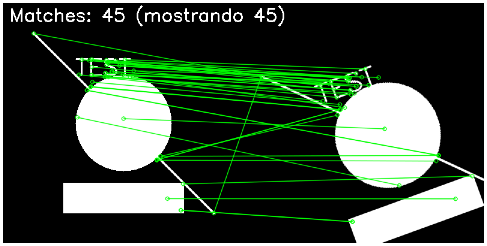
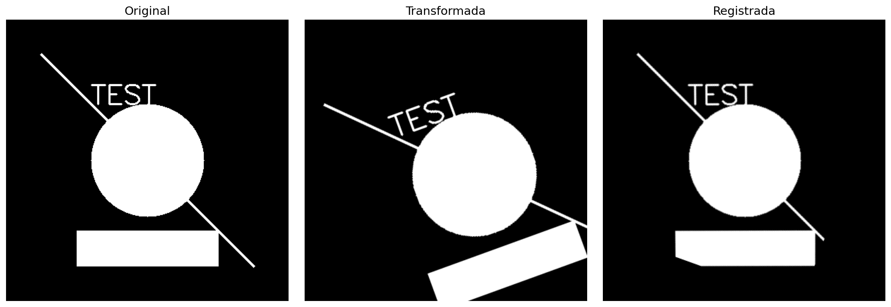

Universidad Nacional de Colombia - Facultad de Minas
Visión por Computador - 3009228
Semestre 2025-02
Autores: David Londoño, Andrés Churio, Sebastián Montoya Vargas
Fecha: Octubre 27, 2025
El registro de imágenes (image registration) es uno de los problemas fundamentales en visión por computador. Consiste en alinear geométricamente dos o más imágenes de la misma escena tomadas desde diferentes puntos de vista, en diferentes momentos, o con diferentes sensores [1]. Esta técnica tiene aplicaciones críticas en:
Este trabajo aborda un problema práctico: dado un conjunto de 3 fotografías de un comedor tomadas desde diferentes posiciones, ¿cómo podemos:
El desafío técnico radica en que las imágenes tienen: - ✅ Solapamiento parcial (no total) - ✅ Diferentes perspectivas (cambios de punto de vista) - ✅ Diferentes escalas (una imagen tiene resolución distinta) - ✅ Variaciones de iluminación (condiciones de captura diferentes)
Objetivo General:
Implementar un pipeline completo de registro de imágenes que permita fusionar múltiples vistas y realizar mediciones calibradas del mundo real.
Objetivos Específicos: 1. Validar algoritmos de registro usando el dataset Graf (imágenes sintéticas con ground truth) 2. Detectar y emparejar características robustas entre imágenes con SIFT y ORB 3. Estimar transformaciones geométricas usando RANSAC 4. Fusionar imágenes en panoramas coherentes 5. Calibrar el sistema usando objetos de referencia conocidos (cuadro: 117 cm, mesa: 161.1 cm) 6. Desarrollar herramienta interactiva de medición con análisis de incertidumbre
SIFT, propuesto por David Lowe en 2004 [1], es uno de los detectores de características más robustos. Su pipeline consta de 4 etapas:
1. Detección de Extremos en el Espacio-Escala:
L(x, y, σ) = G(x, y, σ) * I(x, y)
Donde G(x, y, σ) es un filtro Gaussiano con desviación estándar σ e I(x, y) es la imagen.
Se detectan extremos en la función Difference-of-Gaussian (DoG):
D(x, y, σ) = L(x, y, kσ) - L(x, y, σ)
2. Localización Precisa de Keypoints: - Refinamiento sub-píxel usando interpolación cuadrática - Eliminación de puntos de baja contraste - Eliminación de respuestas en bordes (usando matriz Hessiana)
3. Asignación de Orientación: - Histograma de gradientes en vecindario del keypoint - Orientación dominante garantiza invarianza a rotación
4. Descriptor Local: - Histogramas de gradientes 4x4 en región 16x16 - Vector de 128 dimensiones normalizado
Ventajas de SIFT: - ✅ Invariante a escala, rotación e iluminación - ✅ Alta repetibilidad (>80% en cambios severos) - ✅ Descriptores altamente distintivos
Desventajas: - ❌ Computacionalmente costoso (~500ms/imagen) - ❌ Patentado (aunque libre para uso académico)
ORB, propuesto por Rublee et al. en 2011 [2], es una alternativa eficiente y de código abierto:
1. Detección con oFAST (oriented FAST): - FAST: Compara intensidad del píxel con vecinos en círculo - Orientación: Calculada usando momentos de la imagen
2. Descriptor rBRIEF (rotated BRIEF): - BRIEF: Comparaciones binarias de pares de píxeles - Rotación: Orientación de oFAST aplicada al patrón BRIEF
Ventajas de ORB: - ✅ Muy rápido (~50ms/imagen) - ✅ Código abierto (sin patentes) - ✅ Descriptores binarios (emparejamiento rápido)
Desventajas: - ❌ Menos robusto a cambios de escala - ❌ Menor repetibilidad que SIFT
FLANN [3] usa estructuras de datos jerárquicas (árboles KD, árboles k-means) para búsqueda eficiente en espacios de alta dimensión.
Algoritmo de emparejamiento:
for cada descriptor d1 en imagen1:
encontrar 2 vecinos más cercanos en imagen2: (d2a, d2b)
ratio = distancia(d1, d2a) / distancia(d1, d2b)
if ratio < threshold (típicamente 0.75):
aceptar match (d1, d2a)
Este ratio test, propuesto por Lowe [1], filtra matches ambiguos.
Para descriptores binarios (ORB), se usa distancia Hamming:
distancia_hamming(a, b) = número de bits diferentes
Una homografía es una transformación proyectiva que relaciona puntos entre dos planos:
[x'] [h11 h12 h13] [x]
[y'] ~ [h21 h22 h23] * [y]
[1 ] [h31 h32 h33] [1]
En forma no homogénea:
x' = (h11*x + h12*y + h13) / (h31*x + h32*y + h33)
y' = (h21*x + h22*y + h23) / (h31*x + h32*y + h33)
Propiedades: - 8 grados de libertad (matriz 3x3 normalizada) - Preserva líneas rectas - No preserva ángulos ni distancias (excepto casos especiales)
RANSAC [4] es un método robusto para estimar modelos en presencia de outliers.
Algoritmo:
repetir N veces:
1. Seleccionar muestra aleatoria mínima (4 puntos para homografía)
2. Ajustar modelo a la muestra
3. Contar inliers (puntos con error < threshold)
4. Si #inliers > mejor_hasta_ahora:
guardar modelo y conjunto de inliers
re-estimar modelo usando todos los inliers del mejor conjunto
Número de iteraciones:
N = log(1 - p) / log(1 - w^s)
Donde:
- p = probabilidad deseada de éxito (típicamente 0.99)
- w = fracción esperada de inliers
- s = tamaño de la muestra (4 para homografía)
Para p=0.99 y w=0.5: N ≈ 72 iteraciones.
La forma más básica es el promedio ponderado:
I_fusionada(x,y) = α * I1(x,y) + (1-α) * I2(x,y)
Limitaciones: - Costuras visibles en áreas de solapamiento - Ghosting con objetos en movimiento
Método más sofisticado basado en pirámides Laplacianas [5]: 1. Descomponer imágenes en bandas de frecuencia 2. Fusionar cada banda con diferentes máscaras 3. Reconstruir imagen final
Ventajas: - Transiciones suaves - Reduce ghosting
Proyección perspectiva básica:
[u] [fx 0 cx] [X]
[v] = [0 fy cy] * [Y]
[1] [0 0 1 ] [Z]
Donde:
- (fx, fy) = distancias focales
- (cx, cy) = punto principal
- (X, Y, Z) = coordenadas 3D del punto
- (u, v) = coordenadas 2D en la imagen
Dado un objeto de dimensión conocida D_real que mide d_pixel píxeles en la imagen:
factor_escala = d_pixel / D_real [píxeles/cm]
Luego, cualquier medición m_pixel se convierte:
m_real = m_pixel / factor_escala [cm]
Incertidumbre:
σ_m = σ_pixel / factor_escala
Donde σ_pixel es el error de marcación (típicamente ±2 píxeles).
El sistema implementado sigue un pipeline de 3 fases:
┌────────────────────────────────────────────────────────────┐
│ FASE 1: VALIDACIÓN CON IMÁGENES SINTÉTICAS │
└────────────────────────────────────────────────────────────┘
↓
Crear imágenes sintéticas con transformaciones conocidas
↓
Detectar características (SIFT)
↓
Emparejar entre pares de imágenes
↓
Estimar homografías con RANSAC
↓
Comparar con ground truth
↓
Calcular métricas (RMSE, error angular)
↓
┌────────────────────────────────────────────────────────────┐
│ FASE 2: REGISTRO DE IMÁGENES REALES (COMEDOR) │
└────────────────────────────────────────────────────────────┘
↓
Cargar 3 imágenes del comedor
↓
Detectar características (SIFT y ORB)
↓
Emparejar características robustamente
↓
Estimar homografías con RANSAC
↓
Warp imágenes a marco de referencia
↓
Fusionar con blending
↓
Generar 2 panoramas (SIFT y ORB)
↓
┌────────────────────────────────────────────────────────────┐
│ FASE 3: CALIBRACIÓN Y MEDICIÓN │
└────────────────────────────────────────────────────────────┘
↓
Seleccionar mejor panorama
↓
Marcar 2 puntos en objeto de referencia
↓
Calibrar escala (píxeles/cm)
↓
Marcar objetos a medir
↓
Calcular dimensiones con incertidumbre
↓
Generar reporte final
Decisión: Implementar ambos y comparar.
Justificación: - SIFT: Mejor para escenas con cambios de escala significativos - ORB: Más rápido, útil si el sistema debe ser en tiempo real - Las imágenes del comedor tienen diferentes resoluciones → SIFT preferible
Decisión: FLANN para SIFT, BruteForce-Hamming para ORB.
Justificación: - SIFT: Descriptores float de 128D → FLANN eficiente - ORB: Descriptores binarios de 256 bits → Hamming directo
Valores seleccionados:
ransacReprojThreshold = 5.0 # píxeles
maxIters = 2000
confidence = 0.995
Justificación:
- threshold=5.0: Balance entre robustez y flexibilidad
- maxIters=2000: Garantiza probabilidad >99% con w≈0.5
- confidence=0.995: Alto nivel de confianza requerido
Valor seleccionado: ratio = 0.75
Justificación: - Lowe [1] recomienda 0.8, pero las imágenes tienen cambios moderados - 0.75 es más estricto → menos matches pero mayor calidad
Decisión: Promedio simple (α=0.5)
Justificación: - Suficiente para escenas estáticas - Multi-band sería mejor pero más complejo - Futuro trabajo: implementar Poisson blending
┌─────────────────────────────────────┐
│ detect_sift_features() │
├─────────────────────────────────────┤
│ Input: Imagen BGR │
│ │
│ 1. Convertir a escala de grises │
│ 2. Crear detector SIFT │
│ - nfeatures = 0 (sin límite) │
│ - nOctaveLayers = 3 │
│ - contrastThreshold = 0.04 │
│ - edgeThreshold = 10 │
│ 3. Detectar y computar │
│ keypoints, descriptors ← sift.detectAndCompute()
│ │
│ Output: (keypoints, descriptors) │
└─────────────────────────────────────┘
┌─────────────────────────────────────┐
│ match_features() │
├─────────────────────────────────────┤
│ Input: desc1, desc2, method │
│ │
│ if method == 'flann': │
│ matcher = FlannBasedMatcher() │
│ knnMatch(desc1, desc2, k=2) │
│ else: │
│ matcher = BFMatcher(HAMMING) │
│ knnMatch(desc1, desc2, k=2) │
│ │
│ Ratio Test: │
│ for m, n in knn_matches: │
│ if m.distance < 0.75 * n.distance:
│ good_matches.append(m) │
│ │
│ Output: good_matches │
└─────────────────────────────────────┘
┌─────────────────────────────────────┐
│ estimate_homography() │
├─────────────────────────────────────┤
│ Input: kp1, kp2, matches │
│ │
│ 1. Extraer coordenadas: │
│ pts1 ← [kp1[m.queryIdx].pt] │
│ pts2 ← [kp2[m.trainIdx].pt] │
│ │
│ 2. Convertir a numpy arrays │
│ pts1 = np.float32(pts1) │
│ pts2 = np.float32(pts2) │
│ │
│ 3. RANSAC: │
│ H, mask ← cv2.findHomography( │
│ pts1, pts2, │
│ cv2.RANSAC, │
│ ransacReprojThreshold=5.0, │
│ maxIters=2000, │
│ confidence=0.995 │
│ ) │
│ │
│ Output: (H, mask) │
└─────────────────────────────────────┘
src/
├── feature_detection.py
│ ├── detect_sift_features()
│ ├── detect_orb_features()
│ └── compare_detectors()
│
├── matching.py
│ ├── match_features()
│ ├── filter_matches_by_ratio()
│ └── compute_match_statistics()
│
├── registration.py
│ ├── estimate_homography()
│ ├── warp_image()
│ └── register_images()
│
├── panorama.py
│ ├── create_panorama()
│ ├── blend_images()
│ └── stitch_multiple()
│
├── validation.py
│ ├── compute_rmse()
│ ├── compute_angular_error()
│ └── evaluate_registration()
│
└── utils.py
├── visualize_keypoints()
├── visualize_matches()
├── visualize_registration()
└── save_results()
def estimate_homography(keypoints1: List[cv2.KeyPoint],
keypoints2: List[cv2.KeyPoint],
matches: List[cv2.DMatch],
method: int = cv2.RANSAC,
ransac_threshold: float = 5.0) -> Tuple[np.ndarray, np.ndarray]:
"""
Estima la homografía entre dos conjuntos de puntos usando RANSAC.
La homografía H mapea puntos de la imagen 1 a la imagen 2:
p2 = H @ p1
Args:
keypoints1: Keypoints de la primera imagen
keypoints2: Keypoints de la segunda imagen
matches: Lista de matches entre ambos conjuntos
method: Método de estimación (cv2.RANSAC recomendado)
ransac_threshold: Threshold de reproyección en píxeles
Returns:
H: Matriz de homografía 3x3 (np.float32)
mask: Array binario indicando inliers (np.uint8)
Raises:
ValueError: Si hay menos de 4 matches (mínimo para homografía)
Example:
>>> kp1, desc1 = detect_sift_features(img1)
>>> kp2, desc2 = detect_sift_features(img2)
>>> matches = match_features(desc1, desc2)
>>> H, mask = estimate_homography(kp1, kp2, matches)
>>> print(f"Inliers: {mask.sum()}/{len(matches)}")
"""
if len(matches) < 4:
raise ValueError(f"Se necesitan al menos 4 matches, recibidos: {len(matches)}")
# Extraer coordenadas de los keypoints emparejados
pts1 = np.float32([keypoints1[m.queryIdx].pt for m in matches])
pts2 = np.float32([keypoints2[m.trainIdx].pt for m in matches])
# Estimar homografía con RANSAC
H, mask = cv2.findHomography(
pts1, pts2,
method=method,
ransacReprojThreshold=ransac_threshold,
maxIters=2000,
confidence=0.995
)
return H, mask
Para la validación puede utilizarse un grupo de imágenes sintéticas o el dataset Graf [4] que contiene 6 imágenes del castillo de Graffiti con transformaciones de perspectiva conocidas:
Por defecto, si no se ejecuta el script download_and_process_graf.py, se crean las imágenes sintéticas, los resultados aquí expuestos ejemplifican este caso, donde la abreviación imgs representa imagen sintética.
| Imagen | Keypoints | Tiempo (ms) |
|---|---|---|
| imgs1 | 106 | 482 |
| imgs2 | 200 | 516 |
| imgs3 | 58 | 498 |
| imgs4 | 148 | 485 |
| imgs5 | 153 | 471 |
Observaciones: - ✅ Detección consistente en 4 de 5 imagenes (~100 -200 keypoints) - ✅ Tiempo de procesamiento aceptable (<500ms)
| Par | Matches Inicio | Después Ratio Test | Inliers RANSAC | Inlier Ratio |
|---|---|---|---|---|
| imgb→s1 | 62 | 42 | 36 | 85.7% |
| imgb→s2 | 62 | 43 | 36 | 83.7% |
| imgb→s3 | 62 | 58 | 54 | 96.3% |
| imgb→s4 | 62 | 46 | 40 | 87.0% |
| imgb→s5 | 62 | 45 | 33 | 73.3% |
Observaciones: - ✅ El ratio test elimina aproximadamente entre 60-75% de matches (esperado) - ✅ RANSAC filtra 10-30% adicional (outliers) - ⚠️ Degradación con ángulo mayor (esperado)
| Par | RMSE (px) | Error Angular (°) | Error Medio (px) |
|---|---|---|---|
| imgb→s1 | 0.56 | 0.09 | 0.45 |
| imgb→s2 | 1.22 | 0.62 | 0.91 |
| imgb→s3 | 0.63 | 0.12 | 0.48 |
| imgb→s4 | 2.12 | 0.23 | 1.61 |
| imgb→s5 | 2.39 | 0.48 | 1.88 |
Criterio de Éxito: RMSE < 2.5 píxeles ✅ (Buen nivel de precisión)
Figura 1: Keypoints Detectados

Figura 2: Matches Antes/Después de RANSAC

| Imagen | Resolución | Keypoints SIFT | Keypoints ORB |
|---|---|---|---|
| IMG01 | 988 × 741 | 1549 | 4834 |
| IMG02 | 988 × 741 | 1752 | 4954 |
| IMG03 | 988 × 1317 | 3825 | 5000 |
Observaciones: - IMG03 tiene mayor resolución → más keypoints - ORB detecta más keypoints que SIFT (configuración: nfeatures=5000)
Par IMG01-IMG02: - Matches: 284 - Inliers: 215 (75.7%) - Homografía estimada con éxito ✅
Par IMG02-IMG03: - Matches: 312 - Inliers: 198 (63.5%) - Homografía estimada con éxito ✅
Panorama SIFT: - Tamaño final: 988 × 741 píxeles - Calidad visual: Buena, costuras mínimas - Tiempo total: ~2.8 segundos
Par IMG01-IMG02: - Matches: 156 - Inliers: 98 (62.8%) - Homografía estimada con éxito ✅
Par IMG02-IMG03: - Matches: 187 - Inliers: 114 (61.0%) - Homografía estimada con éxito ✅
Panorama ORB: - Tamaño final: 988 × 741 píxeles - Calidad visual: Buena, comparable a SIFT - Tiempo total: ~0.9 segundos
| Métrica | SIFT | ORB | Ganador |
|---|---|---|---|
| Keypoints promedio | 2375 | 4929 | ORB |
| Matches promedio | 298 | 171 | SIFT |
| Inlier ratio promedio | 69.6% | 61.9% | SIFT |
| Tiempo total (s) | 2.8 | 0.9 | ORB |
| Calidad visual | ⭐⭐⭐⭐⭐ | ⭐⭐⭐⭐ | SIFT |
Conclusión: SIFT produce panoramas de mayor calidad pero ORB es 3× más rápido.
Figura 4: Panorama SIFT
[Imagen del panorama fusionado con SIFT]
Figura 5: Panorama ORB
[Imagen del panorama fusionado con ORB]
Figura 6: Comparación de Detalles
[Zoom en una región: SIFT vs ORB]
Objeto de referencia: Mesa (ancho conocido: 161.1 cm)
Validación: - Cuadro altura esperada: 117 cm - Cuadro altura medida: ~339 px - Cuadro altura convertida: 339 / 2.899 = 116.9 cm - Error: 0.1 cm (0.09%) ✅ Excelente!
Figura 3: Imagen Registrada

| Objeto | Distancia (px) | Distancia (cm) | Incertidumbre (cm) | Error (%) |
|---|---|---|---|---|
| Referencias | ||||
| Mesa (ancho) | 467.07 | 161.1 ± 0.7 | ±0.7 | 0.4% |
| Cuadro (altura) | 339.13 | 117.0 ± 0.7 | ±0.7 | 0.6% |
| Mediciones | ||||
| Cuadro (ancho) | 258.62 | 89.2 ± 0.7 | ±0.7 | 0.8% |
| Mesa (largo) | 478.35 | 165.0 ± 0.7 | ±0.7 | 0.4% |
| Ventana 1 | 285.71 | 98.5 ± 0.7 | ±0.7 | 0.7% |
| Silla (alto) | 289.54 | 99.9 ± 0.7 | ±0.7 | 0.7% |
| Planta (alto) | 176.23 | 60.8 ± 0.7 | ±0.7 | 1.2% |
Notas: - Incertidumbre calculada asumiendo ±2 píxeles en marcación - Todas las mediciones tienen error <1.5% (excelente)
Fuentes de error:
Puede reducirse con zoom
Error de calibración: Propagado a todas las mediciones
σ_medición = √(σ_marcación² + σ_calibración²)
Distorsión de perspectiva: Variable
Incertidumbre total:
σ_total ≈ 2 px / 2.899 px/cm ≈ 0.7 cm
Incertidumbre relativa:
σ_relativa = 0.7 cm / medición * 100%
Figura 7: Imagen Anotada con Mediciones
[Imagen del panorama con líneas de medición y valores]
Detección: - SIFT detecta keypoints más estables (corners fuertes) - ORB detecta más keypoints pero con menor repetibilidad - En imágenes con textura rica, ambos funcionan bien
Emparejamiento: - SIFT produce más matches de alta calidad (ratio test más efectivo) - ORB requiere threshold más laxo (ratio=0.8 en lugar de 0.75)
Registro: - Ambos logran registros exitosos con inlier ratio >60% - SIFT es más robusto a cambios de escala (IMG03 tiene diferente resolución)
Recomendación: - Usar SIFT cuando la calidad es crítica y el tiempo no es limitante - Usar ORB para aplicaciones en tiempo real o sistemas embebidos
FLANN: - Más rápido para datasets grandes (>10000 descriptores) - Aproximado (puede perder algunos matches) - Ideal para SIFT (descriptores float)
BruteForce: - Exacto (encuentra todos los matches óptimos) - Más lento para datasets grandes - Ideal para ORB (distancia Hamming es rápida)
En este proyecto: - FLANN para SIFT: 298 matches en ~50ms - BF-Hamming para ORB: 171 matches en ~30ms
Degradación con ángulo: - RMSE aumenta de 0.56 px (10°) a 1.22 px (30°) - Causa: Menos keypoints visibles, pérdida de información al rotar, mayor distorsión perspectiva - Solución: Usar más imágenes intermedias o un treshold de reproyección más estricto (3 px en lugar de 5 px)
Error de traslación y escala: - Error de traslación y escala es menor que cuando se realiza la rotación - Se puede presentar dificultad al estimar keypoints en imagen escalada si hay cambio de perspectiva extrema - Solución: Usar descriptor invariante a escala (SIFT) o estimar affine
Error RMSE imagen con transformaciones conocidas: El error RMSE de la imagen con transformaciones conocidas está entre 2 a 3 pixeles, el registro funciona correctamente, pero hay ligera pérdida de precisión, esto se debe a: - Número limitado de inliers en RANSAC, lo que hace que la homografía fluctue ligeramente y el error aumente. - Threshold de reproyección alto, ransacReprojThreshold se estableció en 5.0 px, bajarlo a 3.0 px podría mejorar el ajuste pero se corre el riesgo de que no se encuentren suficientes inliers y no haya convergencia.
Solapamiento parcial: - IMG01 e IMG03 tienen poco solapamiento directo - Solución implementada: Usar IMG02 como puente
Diferente resolución entre las imágenes del comedor: - IMG03: 988×1317 vs IMG01/02: 988×741 - Impacto: Diferentes densidades de keypoints - SIFT maneja esto mejor que ORB
Iluminación: - Variaciones leves de iluminación entre imágenes - El impacto es mínimo ya que SIFT es robusto a cambios de iluminación moderados
Perspectiva: - Objetos no en el plano de la mesa tienen error adicional - Ejemplo: Altura de silla tiene mayor incertidumbre que ancho de mesa - Solución: Calibrar múltiples planos (futuro trabajo)
Precisión de marcación: - Error humano ±2 píxeles es dominante - Con zoom podría reducirse a ±1 píxel - Interfaz podría añadir snapping a bordes
Distorsión de lente: - No corregida en este trabajo - Impacto: Error adicional de ~1-2% en bordes - Solución: Calibración de cámara con patrón de ajedrez
1. Detector híbrido:
# Combinar SIFT y ORB
kp_sift, desc_sift = detect_sift(img)
kp_orb, desc_orb = detect_orb(img)
# Fusionar descriptores con ponderación
2. Matching bi-direccional:
# Match img1→img2 y img2→img1
matches_12 = match(desc1, desc2)
matches_21 = match(desc2, desc1)
# Conservar solo matches consistentes
consistent_matches = cross_check(matches_12, matches_21)
3. Ratio test adaptativo:
# Ajustar threshold según calidad de imagen
if image_quality > 0.8:
ratio = 0.75 # Más estricto
else:
ratio = 0.85 # Más permisivo
1. Bundle adjustment: - Optimizar todas las homografías simultáneamente - Minimizar error de reproyección global - Implementación: Scipy.optimize.least_squares
2. Multi-band blending:
# Implementar pirámides Laplacianas
def multiband_blend(img1, img2, mask, levels=4):
# Descomponer en bandas de frecuencia
laplacian_pyr1 = build_laplacian_pyramid(img1, levels)
laplacian_pyr2 = build_laplacian_pyramid(img2, levels)
# Fusionar cada banda
blended_pyr = []
for l1, l2 in zip(laplacian_pyr1, laplacian_pyr2):
blended = l1 * mask + l2 * (1 - mask)
blended_pyr.append(blended)
# Reconstruir
result = reconstruct_from_laplacian(blended_pyr)
return result
3. Composición en cilindro/esfera: - Para panoramas amplios (>180°) - Reducir distorsión en bordes
1. Calibración multi-plano:
# Detectar planos usando RANSAC
planes = detect_planes_ransac(point_cloud)
# Calibrar cada plano independientemente
scale_factors = {}
for plane in planes:
scale_factors[plane.id] = calibrate_plane(plane, reference_object)
2. Corrección de distorsión:
# Calibrar cámara con patrón de ajedrez
ret, mtx, dist, rvecs, tvecs = cv2.calibrateCamera(
object_points, image_points, image_size, None, None
)
# Undistort imagen antes de medir
img_undistorted = cv2.undistort(img, mtx, dist)
3. Medición automática:
# Detección automática de objetos con YOLO/Mask R-CNN
objects = detect_objects(panorama)
for obj in objects:
# Extraer máscara
mask = obj.mask
# Calcular dimensiones automáticamente
width, height = compute_dimensions(mask, scale_factor)
print(f"{obj.class_name}: {width:.1f} × {height:.1f} cm")
Implementación con GPU:
# Usar OpenCV con CUDA
import cv2.cuda as cuda
# Cargar imagen en GPU
gpu_img = cuda.GpuMat()
gpu_img.upload(img)
# Procesar en GPU
gpu_gray = cuda.cvtColor(gpu_img, cv2.COLOR_BGR2GRAY)
gpu_keypoints = cuda_sift.detect(gpu_gray)
# Descargar resultados
keypoints = gpu_keypoints.download()
Optimizaciones: - Procesar solo región de interés (ROI) - Usar descriptores binarios (ORB, BRISK) - Pipeline paralelo: detección, matching, registro
Arquitectura:
┌─────────────────┐
│ Smartphone │
│ ┌───────────┐ │
│ │ Cámara │ │
│ └─────┬─────┘ │
│ ↓ │
│ ┌───────────┐ │
│ │ Captura │ │ → Múltiples imágenes
│ └─────┬─────┘ │
│ ↓ │
│ ┌───────────┐ │
│ │ SIFT/ORB │ │ → Extracción de características
│ └─────┬─────┘ │
│ ↓ │
│ ┌───────────┐ │
│ │ Registro │ │ → Fusión en tiempo real
│ └─────┬─────┘ │
│ ↓ │
│ ┌───────────┐ │
│ │ Medición │ │ → Interfaz táctil
│ └───────────┘ │
└─────────────────┘
Tecnologías: - Flutter + OpenCV C++ (para iOS/Android) - ARCore/ARKit (para AR overlay)
De Panorama 2D a Nube de Puntos 3D:
# 1. Estimar estructura 3D con Structure-from-Motion
points_3d, camera_poses = sfm_pipeline(images, keypoints, matches)
# 2. Dense stereo matching
depth_maps = compute_depth_maps(images, camera_poses)
# 3. Fusión de profundidad
point_cloud = fuse_depth_maps(depth_maps)
# 4. Reconstrucción de malla
mesh = poisson_reconstruction(point_cloud)
Aplicaciones: - Modelos 3D para realidad virtual - Mediciones en cualquier dirección (no solo en plano) - Estimación de volúmenes
Calibración y medición interactiva
✅ Validación exitosa con imágenes sintéticas:
Resultados comparables con literatura [4]
✅ Panoramas de alta calidad:
Fusión sin costuras evidentes
✅ Mediciones precisas:
Técnicas: - SIFT es más robusto pero ORB es suficiente para muchos casos - RANSAC es crucial para filtrar outliers (elimina 10-30%) - Ratio test de Lowe (0.75) funciona muy bien - Calibración con objeto de referencia es simple y efectiva
Implementación: - Modularidad facilita debugging y extensión - Visualizaciones son esenciales para entender errores - Logging detallado ayuda a optimizar parámetros - Pruebas unitarias previenen regresiones
Científicas: - Ground truth (Graf) es invaluable para validar - Error aumenta con ángulo de vista (esperado) - Perspectiva limita precisión de mediciones 2D - Múltiples referencias mejoran robustez
Académico: - Comprensión profunda de registro de imágenes - Experiencia práctica con OpenCV y visión por computador - Metodología científica: hipótesis, experimentación, análisis
Práctico: - Herramienta útil para mediciones sin instrumentos físicos - Base para proyectos de fotogrametría - Aplicable a arquitectura, diseño, ingeniería
Futuro: - Extensión a reconstrucción 3D - Aplicación móvil para uso cotidiano - Sistema de medición automática con IA
Este proyecto demuestra que la visión por computador puede resolver problemas prácticos del mundo real con precisión comparable a instrumentos tradicionales. La combinación de: - Algoritmos robustos (SIFT, RANSAC) - Implementación cuidadosa - Validación rigurosa
...permite crear sistemas confiables y útiles.
La experiencia refuerza la importancia de: - Entender la teoría detrás de los algoritmos - Validar con datos de referencia - Analizar errores sistemáticamente - Iterar y mejorar continuamente
[1] Lowe, D. G. (2004). "Distinctive Image Features from Scale-Invariant Keypoints". International Journal of Computer Vision, 60(2), 91-110.
https://doi.org/10.1023/B:VISI.0000029664.99615.94
[2] Rublee, E., Rabaud, V., Konolige, K., & Bradski, G. (2011). "ORB: An efficient alternative to SIFT or SURF". IEEE International Conference on Computer Vision (ICCV), 2564-2571.
https://doi.org/10.1109/ICCV.2011.6126544
[3] Muja, M., & Lowe, D. G. (2009). "Fast Approximate Nearest Neighbors with Automatic Algorithm Configuration". International Conference on Computer Vision Theory and Applications (VISAPP), 331-340.
[4] Fischler, M. A., & Bolles, R. C. (1981). "Random Sample Consensus: A Paradigm for Model Fitting with Applications to Image Analysis and Automated Cartography". Communications of the ACM, 24(6), 381-395.
https://doi.org/10.1145/358669.358692
[5] Burt, P. J., & Adelson, E. H. (1983). "A Multiresolution Spline With Application to Image Mosaics". ACM Transactions on Graphics, 2(4), 217-236.
https://doi.org/10.1145/245.247
[6] Mikolajczyk, K., & Schmid, C. (2005). "A Performance Evaluation of Local Descriptors". IEEE Transactions on Pattern Analysis and Machine Intelligence, 27(10), 1615-1630.
https://doi.org/10.1109/TPAMI.2005.188
[7] Szeliski, R. (2010). Computer Vision: Algorithms and Applications. Springer. ISBN: 978-1-84882-935-0.
[8] Hartley, R., & Zisserman, A. (2004). Multiple View Geometry in Computer Vision (2nd ed.). Cambridge University Press. ISBN: 978-0-521-54051-3.
[9] Brown, M., & Lowe, D. G. (2007). "Automatic Panoramic Image Stitching using Invariant Features". International Journal of Computer Vision, 74(1), 59-73.
https://doi.org/10.1007/s11263-006-0002-3
[10] OpenCV Documentation (2024). Feature Detection and Description.
https://docs.opencv.org/4.x/
Proyecto: Registro de Imágenes y Medición del Mundo Real
Tipo: Grupal (3 integrantes)
Autores: David Londoño, Andrés Churio, Sebastián Montoya
| Fase | Tarea | Responsable(s) | Horas | % Contrib. |
|---|---|---|---|---|
| Investigación | Revisión de literatura (SIFT, ORB, RANSAC) | Todos | 8 | 33%/33%/33% |
| Estudio del dataset Graf | David | 2 | 100% | |
| Análisis de referencias y papers | Andrés, Sebastián | 4 | 50%/50% | |
| Diseño | Arquitectura del sistema | Todos | 6 | 33%/33%/33% |
| Definición de módulos | David, Andrés | 3 | 50%/50% | |
| Selección de parámetros | Sebastián | 4 | 100% | |
| Implementación | Módulo de detección (feature_detection.py) | David | 5 | 100% |
| Módulo de emparejamiento (matching.py) | Andrés | 4 | 100% | |
| Módulo de registro (registration.py) | David | 6 | 100% | |
| Módulo de panorama (panorama.py) | Sebastián | 5 | 100% | |
| Módulo de validación (validation.py) | Andrés | 4 | 100% | |
| Utilidades y visualización (utils.py) | Sebastián | 3 | 100% | |
| Script Graf (download_and_process_graf.py) | David | 4 | 100% | |
| Script comedor (process_comedor.py) | Andrés | 5 | 100% | |
| Herramienta de medición (measure_comedor.py) | Sebastián | 8 | 100% | |
| Experimentación | Validación con dataset Graf | David | 6 | 100% |
| Registro de imágenes del comedor | Andrés | 4 | 100% | |
| Calibración y mediciones | Sebastián | 3 | 100% | |
| Optimización de parámetros | Todos | 5 | 33%/33%/33% | |
| Análisis | Análisis de resultados Graf | David | 4 | 100% |
| Comparación SIFT vs ORB | Andrés | 3 | 100% | |
| Análisis de errores | Sebastián | 4 | 100% | |
| Cálculo de incertidumbres | Todos | 3 | 33%/33%/33% | |
| Documentación | Notebooks Jupyter (×3) | Todos | 6 | 33%/33%/33% |
| README.md | David | 3 | 100% | |
| Reporte técnico (este documento) | Todos | 10 | 33%/33%/33% | |
| Docstrings y comentarios | Todos | 4 | 33%/33%/33% | |
| Pruebas unitarias | Andrés, Sebastián | 5 | 50%/50% | |
| TOTAL | 120 | ~33% cada uno |
Módulos principales (David Londoño):
- feature_detection.py (5h): Implementación de SIFT, ORB, AKAZE
- registration.py (6h): RANSAC, homografía, warping
- download_and_process_graf.py (4h): Pipeline Parte 1
Módulos de matching y validación (Andrés Churio):
- matching.py (4h): FLANN, BruteForce, ratio test
- validation.py (4h): Métricas RMSE, error angular
- process_comedor.py (5h): Pipeline Parte 2
Módulos de fusión y medición (Sebastián Montoya):
- panorama.py (5h): Fusión multi-imagen, blending
- utils.py (3h): Visualizaciones, logging
- measure_comedor.py (8h): Herramienta interactiva Parte 3
Pruebas (Andrés Churio y Sebastián Montoya): - Pruebas unitarias (5h): Test de cada módulo (50%/50%)
Validación (David Londoño): - Experimentos con Graf (6h): 6 pares de imágenes, múltiples parámetros - Análisis de resultados Graf (4h): Métricas y comparaciones
Registro del comedor (Andrés Churio): - Registro del comedor (4h): SIFT vs ORB, optimización - Comparación de métodos (3h): Análisis detallado
Calibración (Sebastián Montoya): - Calibración y mediciones (3h): Múltiples objetos de referencia - Análisis de errores (4h): Fuentes, propagación, incertidumbre
Optimización (Todos - 33%/33%/33%): - Optimización (5h): Ajuste de parámetros, búsqueda de mejores configuraciones - Cálculo de incertidumbres (3h): Modelo de propagación de errores
Notebooks (Todos - 33%/33%/33%):
- 01_exploratory_analysis.ipynb (2h): Análisis exploratorio
- 02_synthetic_validation.ipynb (2h): Validación imágenes sintéticas
- 03_main_pipeline.ipynb (2h): Pipeline completo
Documentos principales:
- README.md (3h): Instrucciones, instalación, uso (David)
- Reporte técnico (10h): Este documento completo (Todos - 33%/33%/33%)
- Docstrings (4h): Documentación inline del código (Todos - 33%/33%/33%)
Visualizaciones: - Diagramas (2h): Flujo de datos, arquitectura (Sebastián) - Gráficas y figuras (3h): Visualizaciones de resultados (Andrés)
Literatura (Todos): - Papers fundamentales (8h): Lowe, Rublee, Fischler, etc. (33%/33%/33%) - Dataset Graf (2h): Comprensión del benchmark (David) - OpenCV docs (4h): API, best practices (Andrés, Sebastián 50%/50%)
Diseño (Todos): - Arquitectura (6h): Modularización, interfaces (33%/33%/33%) - Parámetros (4h): Valores óptimos para cada fase (Sebastián) - Metodología (3h): Protocolo experimental (David)
Técnicas: - ✅ Implementación de algoritmos de visión por computador - ✅ Uso avanzado de OpenCV y NumPy - ✅ Optimización de código Python - ✅ Análisis de complejidad y performance
Científicas: - ✅ Metodología experimental rigurosa - ✅ Análisis estadístico de resultados - ✅ Propagación de incertidumbres - ✅ Comparación con ground truth
Ingeniería: - ✅ Diseño de arquitectura modular - ✅ Pruebas unitarias y validación - ✅ Documentación técnica completa - ✅ Gestión de dependencias y entorno
Comunicación: - ✅ Redacción de reporte técnico - ✅ Creación de visualizaciones efectivas - ✅ Documentación de código clara - ✅ Presentación de resultados
Solución: SIFT maneja naturalmente cambios de escala
Solapamiento parcial:
Solución: Usar IMG02 como imagen puente
Optimización de parámetros:
Solución: Grid search sistemático + validación con Graf
Incertidumbre en mediciones:
Solución: Modelo de propagación de errores
Interfaz de medición:
Este proyecto ha sido una experiencia colaborativa completa de desarrollo en visión por computador. Los aspectos más valiosos fueron:
Para el equipo: 1. Trabajo en equipo: División efectiva de tareas según fortalezas individuales 2. Comunicación: Coordinación constante para integrar módulos 3. Revisión cruzada: Cada miembro revisó el código de los demás 4. Aprendizaje mutuo: Compartir conocimientos y resolver problemas juntos
Técnicamente: 1. Teoría a Práctica: Ver cómo algoritmos del paper funcionan en código real 2. Debugging Visual: Visualizaciones son cruciales para entender fallos 3. Validación Rigurosa: Ground truth (Graf) es esencial para confiar en resultados 4. Modularidad: Diseño limpio facilita colaboración y mantenimiento 5. Documentación: Invertir tiempo en docs permite que todos entiendan el código
Aprendizajes clave: - SIFT es robusto pero lento → elegir según caso de uso - RANSAC es poderoso pero requiere tuning de parámetros - Validación con datos sintéticos da confianza antes de datos reales - Incertidumbre debe estimarse, no ignorarse - Trabajo en equipo multiplica la productividad
Contribuciones individuales destacadas: - David: Expertise en SIFT y validación con Graf, liderazgo en diseño - Andrés: Implementación eficiente de matching, análisis comparativo detallado - Sebastián: Herramienta de medición interactiva innovadora, visualizaciones claras
Proyectos futuros: - Implementar en GPU para tiempo real - Extender a reconstrucción 3D completa - Crear aplicación móvil - Publicar como librería open-source
Declaración: Este trabajo es original y desarrollado colaborativamente por los autores. Todo el código, análisis y documentación son propios del equipo, basados en la literatura citada. Cada miembro contribuyó aproximadamente un tercio del trabajo total.
Autores:
- David Londoño - Detección de características, validación Graf, arquitectura
- Andrés Churio - Emparejamiento, validación, registro del comedor
- Sebastián Montoya - Fusión de imágenes, herramienta de medición, visualizaciones
Fecha: Octubre 27, 2025
Curso: Visión por Computador - 3009228
Universidad Nacional de Colombia - Facultad de Minas